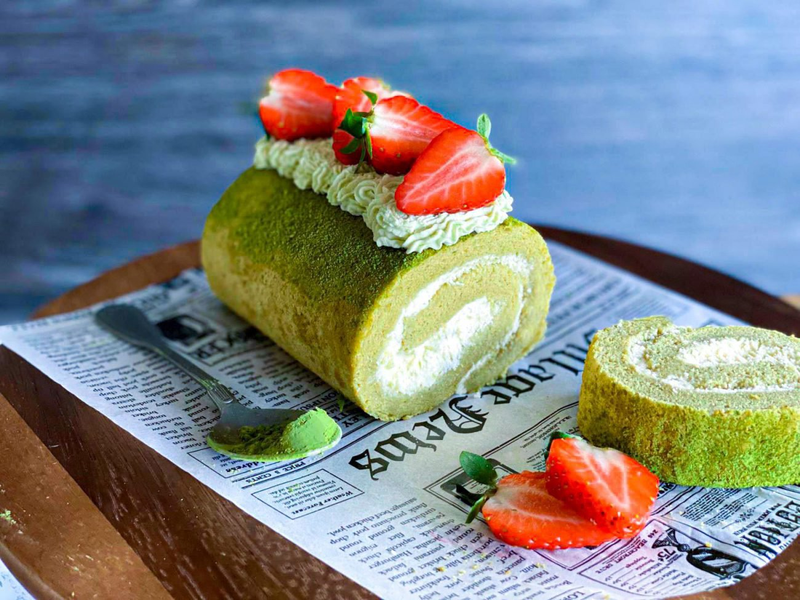

Japanese Matcha Swiss Roll

Description
A popular choice in Japan, the Matcha Swiss Roll is a fluffy sponge
cake rolled up with fresh matcha cream in the middle. If you're a matcha lover,
this could be your next obsession and go to dessert at home.
Ingredients:
- 4 large eggs
- 3/4 cup cake flour
- 1/2 tsp baking powder
- 2 tbsp matcha (green tea powder)
- 1/2 cup sugar
- 3 tbsp whole milk
Cake Flour Recipe:
- For every 1 cup of AP (all-purpose flour), remove 2 tablespoons of AP flour.
- Add 2 tablespoons of cornstarch for every 1 cup of of AP flour.
- Sift 3-5 times and it's ready to use cake flour.
Matcha Cream Filling:
- 3/4 heavy whipping cream (chilled)
- 1 1/2 tbsp sugar
- 2 tbsp matcha (green tea powder)
Directions:
- Preheat oven to 375F and line a 15"x10" jelly roll pan with parchment paper.
- Separate egg yolks and whites into two bowls. Keep egg whites in fridge and egg yolks
at room temperature.
Make Cake Batter:
- Using a fine mesh sieve, sift cake flour, baking powder, and matcha powder over a sheet of
parchment paper.
- Transfer the dry ingredients into a bowl, set the sieve over the parchment paper
and sift two more times (total 3 times)
- In a large bowl, add egg yolks and whisk them
- Add half of the sugar (1/4 cup) and whisk until the egg mixture becomes double in volume.
When you lift the whisk with some of the mixture onto it, the mixture should fall back into
the bowl in ribbons and slowly disappear back into the mixture.
- Add egg whites into another large bowl and beat them with an electric mixture until
they are foamy.
- Gradually add remaining sugar (1/4 cup) over three separate times and beat it until
stiff peaks form and eggs whites are glossy.
- Gently whisk in 1/3 of the egg whites to the egg yolk mixture until incorporated
in the batter.
- Then, add the mixture back into the egg whites and gently fold in egg whites with a
silicone spatula. Rotate bowl counterclockwise while you scoop up and fold in the
mixture clockwise.
- Add the dry ingredients. Using silicone spatula, fold in gently until
just incorporated. Tip: Adding dry ingredients last prevents from
mixing too much. Over mixing the batter will result in dense, not fluffy sponge cake.
- Add the warm milk and fold until incorporated.
- Pour the batter into the prepared pan. Spread the batter evenly with silicone
pastry scraper.
Bake in the Oven:
- Tap the jelly roll pan a few times on your working surface to remove the air bubbles inside
the batter. Bake for 10-12 minutes, or until an inserted toothpick comes out clean and top of
cake springs back when touched. Be sure to not over bake the cake or it will be too dry and will break
when you roll.
- Remove the pan from the oven and drop the pan on your working space once to prevent the cake
from shrinkage.
- While the pan is still hot, place a sheet of parchment paper and a baking sheet (or cutting board)
on top.
- Wearing oven mitts, flip the baking sheet together (with the cake sandwiched in between).
Using a knife or spatula, lift the jelly roll pan to reveal the cake.
- Gently remove the parchment paper attached to the cake. This side will be the exterior
of the Swiss Roll, so be gentle.
- Place another "protective" sheet of parchment paper and baking sheet on top.
- Hold both baking sheets and flip the cake over so that the brown side is facing up.
Remove the parchment paper.
- Remove the baking sheet and place the cake on the working surface. Diagonally
slice off 1/4 inch on one side of the cake (shorter end). This will help stabilize
the swiss roll when rolled up.
- While the cake is still warm, use your hands to slowly roll the cake
on the parchment paper. Once the cake is rolled up, transfer to a wire rack.
- Cover with kitchen towel and let it cool completely (until it reaches room temperature,
about 30 minutes)
To Prepare Matcha Cream Filling:
- When the cake completely cools, combine the heavy cream, sugar, and matcha powder
in a large bowl.
- Beat until firm and spreadable so it won't ooze out of the cake when you're rolling it up.
Assemble the Swiss Cake:
- Transfer the Swiss Roll to a flat surface and unroll the cake. It's okay if the ends curl
up a bit.
- Using an offset spatula, spread the matcha cream mixture evenly over the cake, leaving a 1/2 inch border on all sides. Spread
slightly less amount of filling towards the last 1/3 of cake as the cream will pile up toward the end
when rolling up.
- Carefully, but tightly, re-roll the cake. The seam side should be on the bottom. Once you
roll up the cake, secure the roll by twisting the parchment paper at both ends (like a candy wrapper). Refrigerate
for at least 2 hours to firm up the cream.
- Remove and unwrap the Swiss Roll. Slice off about 1/2 inch of the cake on both ends
to show off the swirls. Transfer to a serving dish and enjoy.